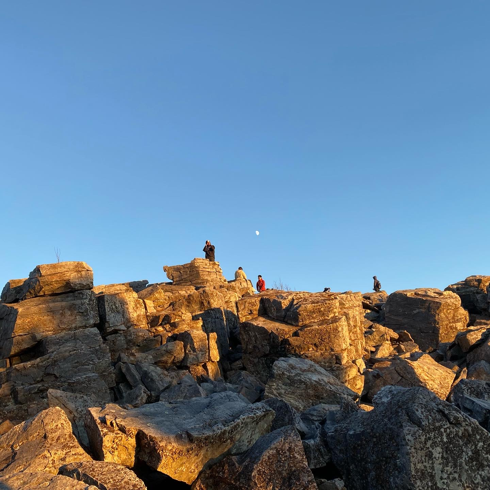

Activities
Life in America
I remember my mother's concern when COVID-19 broke out around the world before I left for the U.S. alone to pursue my PhD. Chinese social media at the time made a big deal out of the failure of the U.S. in fighting the COVID-19 virus. But now a year has passed and the situation is completely different. No one in the U.S. talks about COVID-19 anymore, since it's not a big threat to public healthy anymore. In contrast it was the year when I tried many different things that I had not attempted in China. As a result of that, I learned many skills, such as English speaking, swimming, skiing and cooking. I wish I could document these things as a record of my growing experience. Otherwise, time will blur or even erase the memories.

Shanghai Jiao Tong University, SHH
Group photo of Lab members in the Du Lab. I had a funny and happy time with those wonderful labmates.

Shenandoah, VA
The first hikingin Shenandoah National Park with friends. Gorgeous view, but a little chilly at the top of mountain.

Oxford University, LON
A walk around this beatiful campus with former lab colleague, who is now a PhD student at Oxford University.

The Dallas World Aquarium, TX
Seeing Flamingo in The Dallas World Aquarium in the company of Ms. Zhu and her lovely son, Jerry.